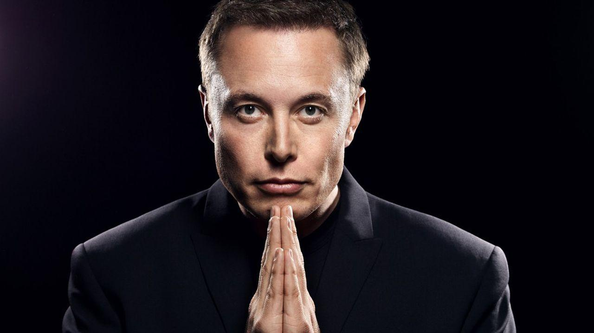

Илон Маск
{kind=link}
Илон Рив Маск — (англ. Elon Reeve Musk) — канадско-американский инженер, предприниматель, изобретатель и инвестор южно-африканского происхождения; миллиардер. Основатель компаний SpaceX и X. com (последняя была объединена с Confinity, переименована в PayPal). Главный дизайнер (Chief Product Architect), генеральный директор и председатель совета директоров Tesla Motors. Входит в совет директоров компании SolarCity, основанной его двоюродными братьями. Добился значительных успехов в сфере информационных технологий, ракетостроения и автомобилестроения.
В декабре 2016 года вошел в состав Президентского форума по стратегии и политике — группы из 16 наиболее успешных и уважаемых американских предпринимателей, задача которых консультировать 45-го президента США Дональда Трампа по вопросам, связанным с экономическим ростом, созданием новых рабочих мест и повышением производительности труда.
Состояние. В рейтинге миллиардеров журнала Forbes в 2018 году его состояние оценивалось более чем в $22,5 млрд.
7 января 2021 года Илон Маск стал богатейшим человеком планеты, сместив основателя Amazon Джеффа Безоса на второе место. Состояние Маска оцениваелось в $185 млрд. 19 февраля 2021 года, состояние основателя SpaceX и Tesla увеличилось до $199,9 млрд. Он вновь стал самым богатым человеком мира, вновь обогнав основателя Amazon Джеффа Безоса ($194,2 млрд), который вернулся на первое место 17 февраля.
Место рождения. Образование. Маск родился 28 июня 1971 года в Претории (ЮАР). Его мать была известным диетологом, отец имел свой инженерный бизнес. В возрасте десяти лет Илон получил в подарок свой первый компьютер и самостоятельно научился на нем программировать. В двенадцатилетнем возрасте он продал за 500 долларов свою первую программу — видеоигру в стиле Space Invaders под названием Blast Star. В 19 лет поступает в Королевский университет в Кингстоне, Онтарио. В 1992 году переехал в США и поступил в Пенсильванский университет, где получил степень бакалавра наук по физике колледжа искусств и наук, а также степень бакалавра по экономике Уортон школы бизнеса. Со временем перешел в Стэнфорд, но обучение не закончил.
Благотворительность. Илон стал председателем правления благотворительного фонда Musk Foundation. В январе 2015 года фонд пожертвовал 10 млн долларов для Института будущего человечества на исследования контроля над искусственным интеллектом.
Личная жизнь. Первая жена, Джастин Маск, училась с ним в одном университете в Канаде. Они поженились в 2000 году, и в семье появилось пятеро сыновей. В сентябре 2008 года Илон и Джастин объявили о размолвке, поскольку Маск стал встречаться с британской актрисой Талулой Райли. Они поженились в 2010 году. В 2012 году Маск и Райли развелись, однако поженились снова в 2013 году. В марте 2016 года они подали заявление на развод, который состоялся в октябре того же года.
Увлечения. Маск владел самолётом Aero L-39 Albatros чехословацкого производства. Позже он купил реактивный самолёт Dassault Falcon 900 из фильма «Здесь курят».
После продажи Zip2 в 1999 году Маск купил суперкар McLaren F1, но разбил его уже в следующем году, когда вместе с ним ехал Питер Тиль.
В октябре 2013 года Маск выкупил на аукционе за 997 тысяч долларов автомобиль-субмарину Wet Nelliе из фильма 1977 года о Джеймсе Бонде «Шпион, который меня любил».
Награды. Журнал Esquire 2008 включил Маска в список 75 самых влиятельных людей 21-го века. В июне 2011 года он был награжден премией Хайнлайна за достижения в коммерциализации космоса в 500 000 долларов США. В феврале 2011 журнал Forbes внес Маска в список 20 самых влиятельных CEO в возрасте до сорока лет. В 2014 году Маск стал лауреатом Edison Achievement Award.
Вверх